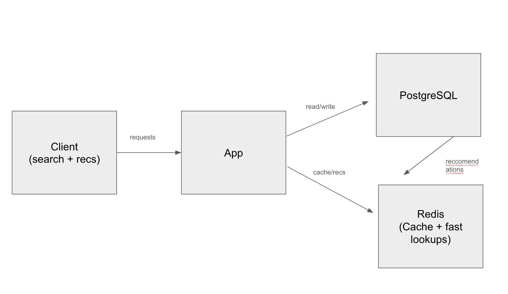

Polyglot Recommendation System
A movie recommendation stack using PostgreSQL as the source of truth and Redis Stack for fast search + caching, designed for responsiveness and explainable ranking.
Stack: PostgreSQL · Redis Stack · SQL · Python CLI · Caching · Ranking
Goal
Build a practical recommender that’s fast, explainable, and easy to use from a simple CLI. The key idea is using each system where it’s strongest: SQL for durable truth + aggregations, Redis for low-latency lookup and search.
What it does
- Search movies quickly (Redis full-text search).
- Recommend unseen movies using a hybrid score (personalization + popularity).
- Cache user ratings to avoid repeated DB hits and keep the UI responsive.
System diagram
Architecture
- PostgreSQL: movies, users, ratings; computes recommendation candidates and scoring.
- Redis Stack: movie hashes + search index to support fast lookup and discovery.
- ETL: loads movies into Redis and builds the search index.
- Cache: per-user ratings stored in Redis (with TTL) to quickly filter “already seen.”
Scoring idea (explainable)
The recommender blends personalization with crowd wisdom:
- Personalization: match recommendations to genres a user rates highly.
- Popularity/quality: incorporate global average rating and rating count for stability.
- Practicality: keep it simple enough to reason about and debug.